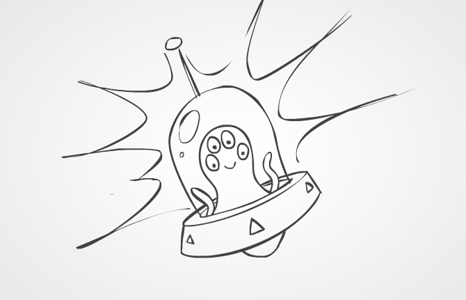

Art direction for a campaign to promote Google's new Chrome browser. The challenge was to come up with a look and feel for a series of engaging ads to be used across all kinds of digital media to highlight various aspects of the new Chrome browser. The Chrome logo needed to be the hero of the ads, and so a black and white sketch style was used so as not to dominate the logo wherever it may appear. As well as online ads, the animations appeared on large format digital outdoor screens and digital escalator panels.
